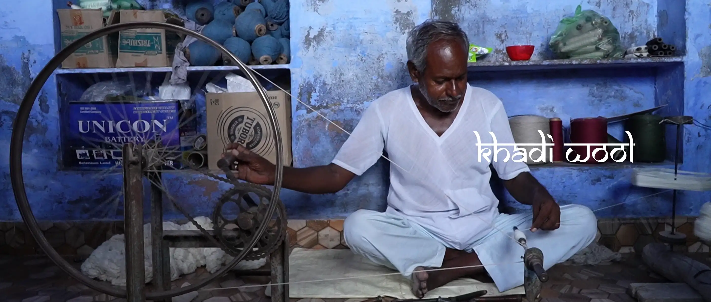
This report presents findings from a short-term ethnographic immersion in the khadi wool communities of
Bikaner, Rajasthan, conducted by a team of student researchers. Our objective was to apply qualitative
research methods to understand the social dynamics and systemic gaps within the craft ecosystem. The
artisans, having been the subject of many studies, seemed to offer rehearsed responses, born from a
skepticism that such research rarely leads to tangible improvements in their lives. To move beyond these
scripted interactions, we adopted a more conversational and open-ended approach. By letting the artisans
guide the discussions, we were able to discover a more nuanced reality. These conversations revealed the
underlying tensions and complex relationships that shape the local khadi sector.
Our findings highlight a significant disconnect between official narratives and the lived experiences of the
artisans. The very meaning of "khadi" is fluid, often shaped by individuals to serve their own interests. We
observed a persistent gap between government policies designed to support craftspeople and the actual access
to these schemes at the grassroots level. A key issue is the powerful role of intermediaries, who often
control access to markets and information, reinforcing existing hierarchies and impacting the earnings of
those at the very beginning of the supply chain, such as the wool-supplying shepherds. This has fostered a
sense of detachment among the artisans, who feel that the benefits of their craft do not always reach them.
We aimed to study the craft of khadi wool in Bikaner and to understand the social dynamics and systemic gaps within its production community.
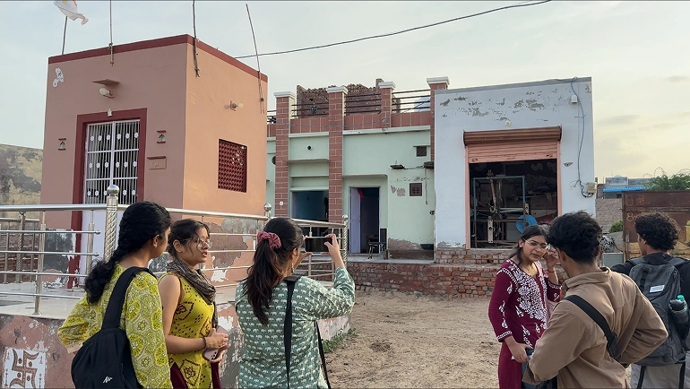
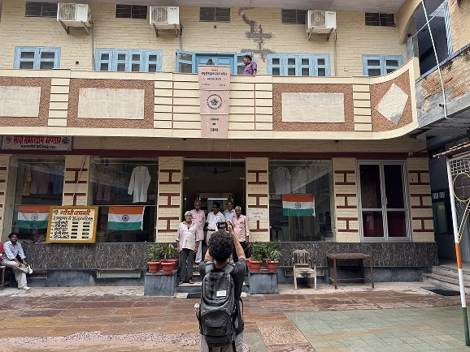
Bikaner, located in the arid Thar Desert region of northwestern Rajasthan, has historically been a
significant centre of wool production and khadi (hand-spun, hand-woven cloth) activity. The district's
pastoral communities supplied raw wool that fed into a network of spinners, weavers, and local traders
embedded in the regional craft economy.
The Khadi and Village Industries Commission (KVIC), established under the Khadi and Village Industries
Commission Act of 1956, has maintained an institutional presence in this region, framing khadi
production as a vehicle for rural self-reliance and livelihood generation rooted in Gandhian philosophy.
It was within this ecosystem that we conducted our short-term ethnographic immersion.
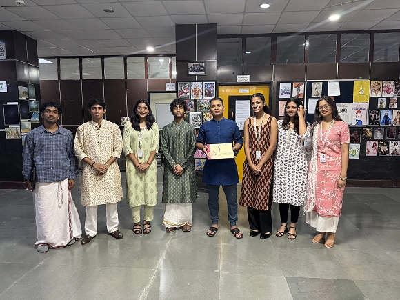
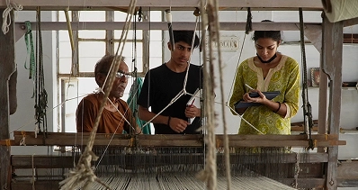
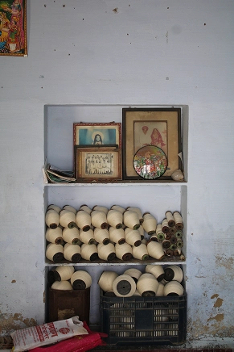
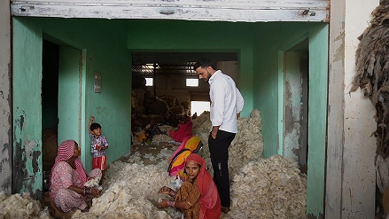
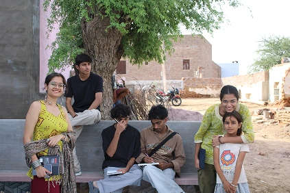
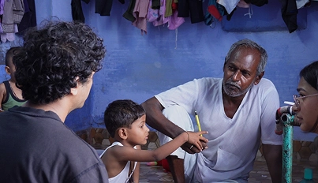
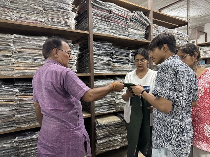
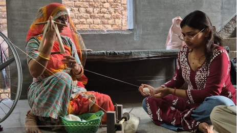
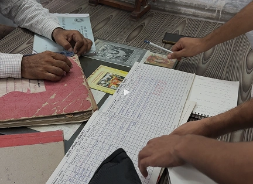
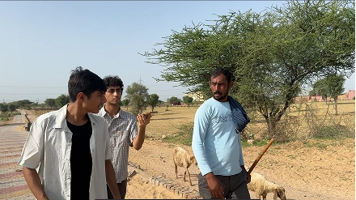
This was a short-term ethnographic immersion conducted by us as a team of student researchers. As such, we
did not claim the depth or longitudinal continuity of extended fieldwork. Our findings were observational
and qualitative in nature, drawn from conversational interviews, direct observation, and field notes
gathered over a limited duration in Bikaner. We did not seek to be statistically representative; rather, we
aimed to surface nuanced, ground-level perspectives that are often absent from quantitative or
policy-focused assessments of the khadi sector.
Our findings should be read as an initial mapping of the ecosystem's social dynamics — a foundation for more
sustained research rather than a comprehensive account.
Khadi is often seen as "handwoven fabric," but originally it means a fully handmade process from fibre to fabric tied to self-reliance and sustainability. In practice parts of the process are now mechanized, and traders selectively highlight hand-made stages, so the term has become fluid and loosely used, shaped more by market needs than clear standards.
Despite many government schemes for handloom and handicraft artisans, most remain unaware of or excluded from them. Middlemen and officials often say benefits are being passed on, but artisans frequently lack the required ID cards, find information hard to access, and report that little support actually reaches them, leading to a strong sense of exclusion and skepticism.
Shepherds say government wool prices are too low and hard to access, making their livelihoods unviable. With a long supply chain, rising fodder and veterinary costs, and competition from imported Australian merino wool, sheep rearing has become risky and unattractive for younger generations, weakening the local khadi base. They also report minimal and poorly-reached animal-health support and feel trapped in a system where they cannot raise prices, deepening their economic strain and undermining pastoral livelihoods and the khadi supply chain.
In our fieldwork, artisans and shepherds showed deep skepticism toward research and surveys, describing repeated visits from outsiders that bring questions and documentation but little visible change. This has led to fatigue and a rehearsed, performative style of response, tailored to what researchers or officials are expected to hear. Only with sustained engagement did deeper realities emerge, but the prevailing view remains that research mainly serves outsiders, with minimal impact on daily life and little incentive for open, honest reflection.
Each of these artisans welcomed us into their workspace and their world. Their voices, experiences, and daily realities form the core of this study — without their openness, this research would not have been possible.
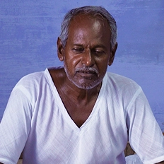
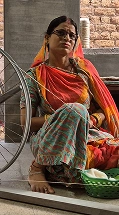
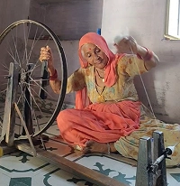
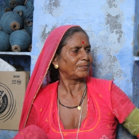
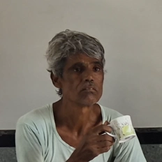
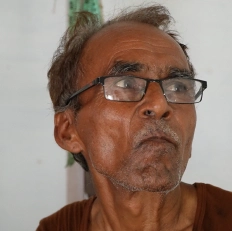